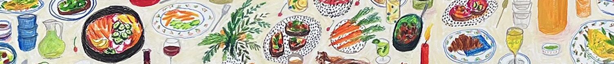
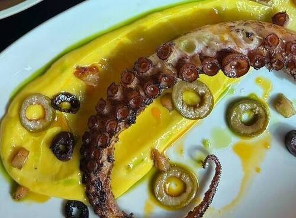

Welcome to the Hidden Cuisines of Los Angeles County
A guide to the lesser known food in Los Angeles, by region
Food By Region
Eastside
Westide
Northside
Southside
Central- Website for Holbox

Regions of Los Angeles County
For reference, these are the cities by region of Los Angeles County
- Eastside- South Gate, Boyle Heights, Lincoln Heights, Atwater Village, Pico Rivera, Whittier
- Westiside- Santa Monica, Beverly Hills, Westwood, Venice, Culver City, Mar Vista
- NorthSide- Burbank, Glendale, North Hollywood, Van Nuys, Sherman Oaks, San Fernando
- Soutside-San Pedro, Compton, Inglewood, Watts, South Gate, Carson, Lynwood
- Central- Downtown, LA Koreatown, Westlake, Pico-Union, Mid-Wilshire
/li>